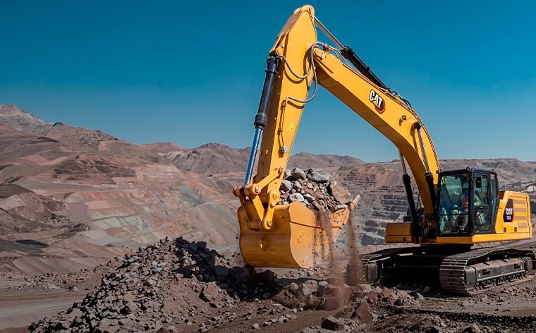
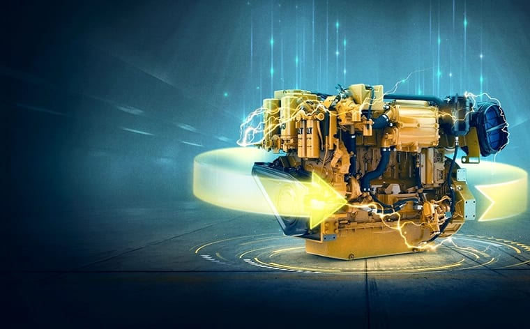
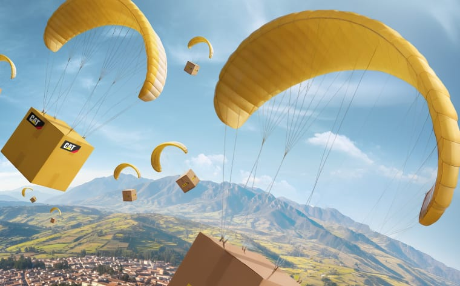
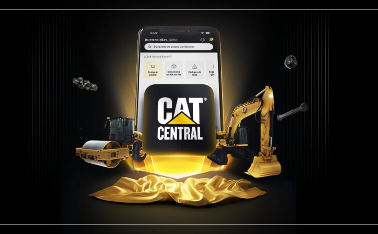

Ferreyros da conformidad de que este certificado es auténtico.
Código




Verificando firma digital…
Esta verificación solo se abre desde el código QR impreso en el certificado físico.
Ferreyros da conformidad de que este certificado es auténtico.
Código
Use la cámara de su celular sobre el código impreso en el certificado.
Los datos en pantalla deben coincidir con los del documento físico.
Si algo no coincide, comuníquese con Ferreyros antes de aceptar el documento.